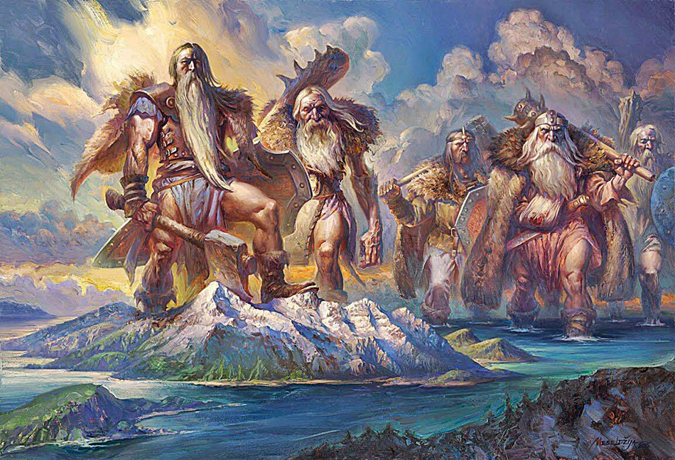
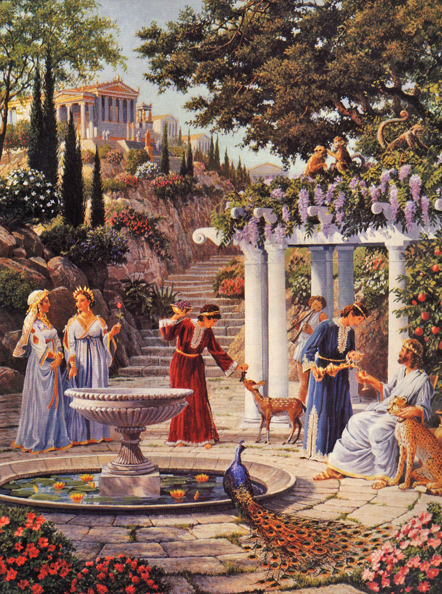

ATLANTESEl análisis de la leyenda de la Atlántida da para hablar de historia y geología extensamente, así como del difusionismo, la idea de que cada descubrimiento de la Antigüedad se hizo una vez y luego se propagó desde el foco originario al resto de la Humanidad, algo que no ocurrió en casos como los de la agricultura, la ganadería y, por poner un ejemplo atlante, la construcción de pirámides. Otros misterios nos pueden enseñar astronomía -el ejemplo más claro son las visitas extraterrestres-, psicología -las visiones de fantasmas-, la biología -¿sacamos a pasear al Yeti o a Nessie?-, cómo se manipula la historia por intereses políticos y religiosos -el Antiguo Testamento aúna ambos objetivos- y el auténtico ingenio de nuestros antepasados, en muchos casos víctimas del racismo de los partidarios de la teoría de los alienígenas ancestrales, para quienes las antiguas culturas no europeas precisaron de la ayuda de extraterrestres a la hora de levantar obras que todavía hoy nos asombran. No, nuestros antepasados eran antiguos; no tontos. Y los atlantes no forman parte de ellos, aunque su ficticia historia nos enseñe muchas cosas.

Gigantes de la Atlantida |

Recreacion los habitantes de la atlantida |
|---|
 Ir Arriba
Ir Arriba